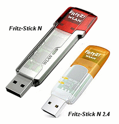
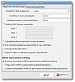
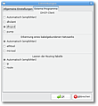

Fritz!WLAN USB Stick-N
Archivierte Anleitung
Dieser Artikel wurde archiviert, da er - oder Teile daraus - nur noch unter einer älteren Ubuntu-Version nutzbar ist. Diese Anleitung wird vom Wiki-Team weder auf Richtigkeit überprüft noch anderweitig gepflegt. Zusätzlich wurde der Artikel für weitere Änderungen gesperrt.
Hinweis:
Artikel bedarf der Überarbeitung, beschriebene Installationen sind hinfällig, dafür sollte für den N2 Stick die Installation aus dem Forum eingearbeitet und getestet werden
Zum Verständnis dieses Artikels sind folgende Seiten hilfreich:
 Dieser Artikel beschreibt die Installation und Inbetriebnahme des Fritz USB-WLAN Stick-N von AVM.
Für die Installation des älteren AVM Fritz-Stick (ohne N) siehe FRITZ!WLAN USB Stick
Ab Ubuntu 9.10 Karmic Koala wird der Stick direkt durch den neuen Treiber ar9170usb unterstützt. Siehe Linux Wireless und beachte die Projektseite  für weitere Hinweise. Damals wurde allerdings nur 802.11abg bis 54Mbit und kein Draft-N unterstützt.
für weitere Hinweise. Damals wurde allerdings nur 802.11abg bis 54Mbit und kein Draft-N unterstützt.
Erst ab Ubuntu 10.04 und einem entsprechenden Mainline-Kernel ab Version 2.6.35-rc5 funktionieren auch höhere Übertragungsraten. Alternativ kann der Treiber carl9170 verwendet werden, der Draft-N unterstützt und stabiler läuft. Anleitung im Forum.
Ab Ubuntu 11.10 Oneiric Ocelot ist carl9170 Standard
Die Anleitung für den neuen Fritz-Stick-N V2 mit der Geräte-ID 057c:8403 ist im Forum zu finden.
Hinweis:
Die nachfolgende Anleitung für die Inbetriebnahme mit WLAN/NdisWrapper ist nur für Ubuntu ab Version 8.04 bis 9.04 erforderlich.
Treiberarchiv entpacken¶
Es können die aktuellen Windows-XP Treiber von avm.de  für 32bit oder 64bit oder auch die Dateien von der beiliegenden Treiber-CD verwendet werden. Die *.exe-Datei muss vorab mittels Wine oder cabextract entpackt werden um an die benötigten Treiberdateien zu gelangen. Es werden nur die Dateien fwusbn.inf (fwusbn64.inf bei 64bit), fwlanusbn_wxp.sys, fwusbn.cat und fwlanusbn.bin benötigt. Die restlichen Dateien und Ordner können gelöscht werden.
für 32bit oder 64bit oder auch die Dateien von der beiliegenden Treiber-CD verwendet werden. Die *.exe-Datei muss vorab mittels Wine oder cabextract entpackt werden um an die benötigten Treiberdateien zu gelangen. Es werden nur die Dateien fwusbn.inf (fwusbn64.inf bei 64bit), fwlanusbn_wxp.sys, fwusbn.cat und fwlanusbn.bin benötigt. Die restlichen Dateien und Ordner können gelöscht werden.
Sollte es Probleme mit den aktuellen 32bit-Treibern geben, kann eine ältere Version verwendet werden. Siehe dazu folgenden Forenbeitrag.
Für ein 64bit-System muss die aktuelle NdisWrapper-Version verwendet werden. Siehe dazu den Abschnitt 64bit System. Anschließend kann der 64bit-Treiber wie beschrieben eingebunden werden.
Wine¶
Wine ist gemäß Wiki-Artikel vorab zu installieren. Eine besondere Konfiguration ist für die nachfolgenden Schritte nicht erforderlich. Im Homeverzeichnis über Terminal [2] zuerst einen neuen Ordner FritzN für die benötigten Dateien anlegen.
mkdir FritzN
Das Treiberpaket herunterladen und dort ablegen. Die *.exe-Datei anschließend über Terminal [2] mit Wine installieren:
wine FritzN/avm_fritz'!'wlan_usb_stick*.exe
Fehlermeldungen des Installationsassistenten können ignoriert werden. Den automatisch startenden Einrichtungsmanager am Ende der Installation einfach abbrechen.
Die oben genannten Treiberdateien befinden sich nun im Homeverzeichnis im versteckten Ordner .wine/drive_c/Programme/AVM_update/AVM_FRITZ!WLAN_USB_Stick... und sollten für die Installation mit einem Dateimanager in ein anderes Verzeichnis kopiert werden.
Treiber installieren¶
USB-Stick anschließen und den Treiber gemäß NdisWrapper in das System einbinden.
Die original .inf-Datei (engl. Identity File) wird allerdings nicht immer korrekt von NdisWrapper interpretiert und muss ggf. angepasst werden. Die Installation ist möglicherweise unvollständig oder es fehlen Treiberparameter in der von ndiswrapper erstellten Konfigurationsdatei /etc/ndiswrapper/fwusbn(64)/057C:8401.F.conf.
Installationsdatei anpassen¶
Mit einem Editor [3] sollte bei Bedarf die Datei fwusbn.inf bearbeitet werden. Es kann auch eine neue Datei fwusbn_mod.inf erstellt werden. Die modifizierte .inf-Datei muss sich für die abschließende Installation des Treibers mit ndiswrapper im selben Verzeichnis wie die benötigten Treiberdateien befinden! Das für ndiswrapper optimierte Treiberpaket kann im Forum heruntergeladen werden .
Folgender Inhalt ist einzutragen:
; fwusbn_mod.inf for AVM FRITZ!WLAN USB Stick N
; optimized for ndiswrapper
[Version]
Signature = "$CHICAGO$"
Class = Net
ClassGUID = {4d36e972-e325-11ce-bfc1-08002be10318}
Provider = %V_AVM%
CatalogFile = fwusbn.cat
DriverVer = see original inf-File
[Manufacturer]
%V_AVM% = AVM
[ControlFlags]
ExcludeFromSelect = *
[AVM.NT.5.1]
%FWLANN.DeviceDesc% = FWLANN, USB\VID_057C&PID_8401
%FWLANN.DeviceDesc% = FWLANN, USB\VID_057C&PID_8402
[Vorgabewerte]
MaxRxUrb = 8
MaxTxUrb = 8
MaxTxUrbDK = 64
MaxRxUrbDK = 64
WirelessMode24G = "Wireless Mode 2.4GHz"
WirelessMode5G = "Wireless Mode 5GHz"
non24G = "1. Non support 2.4GHz"
802_11b = "2. 802.11b"
802_11g = "3. 802.11g"
802_11n_24 = "4. 802.11n"
802_11bg = "5. 802.11bg"
802_11bn = "6. 802.11bn"
802_11gn = "7. 802.11gn"
802_11bgn = "8. 802.11bgn"
non5G = "1. Non support 5GHz"
802_11a = "2. 802.11a"
802_11n_5 = "3. 802.11n"
802_11an = "4. 802.11an"
[FWLANN.NT]
Characteristics = 0x84
BusType = 15
AddReg = Parameter
CopyFiles = Treiber
[Treiber]
fwlanusbn_wxp.sys
fwlanusbn.bin
[Parameter]
HKR,NDI\Interfaces, UpperRange, 0, "ndis5"
HKR,NDI\Interfaces, LowerRange, 0, "ethernet, wifi"
HKR,NDI, Service, 0, "fwlanusbn"
HKR,, VendorDesc, 0, "AVM Berlin"
HKR, Ndi\params\MaxRxUrb, 0, %MaxRxUrb%
HKR, Ndi\params\MaxRxUrb, default, 0, "8"
HKR, Ndi\params\MaxTxUrb, 0, %MaxTxUrb%
HKR, Ndi\params\MaxTxUrb, default, 0, "8"
HKR, Ndi\params\MaxTxUrbDK, 0, %MaxTxUrbDK%
HKR, Ndi\params\MaxTxUrbDK, default, 0, "64"
HKR, Ndi\params\MaxRxUrbDK, 0, %MaxRxUrbDK%
HKR, Ndi\params\MaxRxUrbDK, default, 0, "64"
HKR, Ndi\params\*WirelessMode24G, ParamDesc, 0, "%WirelessMode24G%"
HKR, Ndi\params\*WirelessMode24G, Base, 0, "10"
HKR, Ndi\params\*WirelessMode24G, default, 0, "8"
HKR, Ndi\params\*WirelessMode24G, type, 0, "enum"
HKR, Ndi\params\*WirelessMode24G\enum, "1", 0, %non24G%
HKR, Ndi\params\*WirelessMode24G\enum, "2", 0, %802_11b%
HKR, Ndi\params\*WirelessMode24G\enum, "3", 0, %802_11g%
HKR, Ndi\params\*WirelessMode24G\enum, "4", 0, %802_11n_24%
HKR, Ndi\params\*WirelessMode24G\enum, "5", 0, %802_11bg%
HKR, Ndi\params\*WirelessMode24G\enum, "6", 0, %802_11bn%
HKR, Ndi\params\*WirelessMode24G\enum, "7", 0, %802_11gn%
HKR, Ndi\params\*WirelessMode24G\enum, "8", 0, %802_11bgn%
HKR, Ndi\params\*WirelessMode5G, ParamDesc, 0, "%WirelessMode5G%"
HKR, Ndi\params\*WirelessMode5G, Base, 0, "10"
HKR, Ndi\params\*WirelessMode5G, default, 0, "4"
HKR, Ndi\params\*WirelessMode5G, type, 0, "enum"
HKR, Ndi\params\*WirelessMode5G\enum, "1", 0, %non5G%
HKR, Ndi\params\*WirelessMode5G\enum, "2", 0, %802_11a%
HKR, Ndi\params\*WirelessMode5G\enum, "3", 0, %802_11n_5%
HKR, Ndi\params\*WirelessMode5G\enum, "4", 0, %802_11an%Weiter im Abschnitt Inbetriebnahme.
64bit-System¶
Für das erfolgreiche Betreiben des Sticks unter 64bit muss der Quellcode von Ndiswrapper angepasst und anschließend manuell kompiliert werden. Vorher müssen die die bereits installierten Ndiswrapper-Pakete und Treiber entfernt [1] werden.
Ndiswrapper entfernen:
sudo rmmod -f ndiswrapper # ndiswrapper entladen sudo rm -r /etc/ndiswrapper/* # vorhandene Treiber vollständig löschen sudo apt-get remove --purge ndiswrapper-common ndiswrapper-utils-1.9 # ndiswrapper-Pakete entfernen sudo rm -r /etc/modprobe.d/ndiswrapper # Alias-Tabelle zur Hardwareerkennung löschen
Ndiswrapper anpassen¶
Zunächst muss der aktuelle Quellcode von http://sourceforge.net/projects/ndiswrapper/files/stable/ndiswrapper-1.58.tar.gz/download heruntergeladen und entpackt [5] werden. Ab Lucid muss Version 1.58 verwendet werden.
Im Terminal:
tar -xzf ndiswrapper-1.58.tar.gz cd ndiswrapper-1.58/
NdisWrapper kompilieren¶
Um die Treiber kompilieren zu können, müssen zuerst das Paket build-essential und die passenden Kernel-Header [6] installiert [1] werden (die aktuelle Kernelversion kann man sich z.B. mit "uname -a" ausgeben lassen).
linux-headers-Kernelversion
build-essential
Anschließend Ndiswrapper kompilieren [7]:
cd ndiswrapper-1.?? # in das Quellverzeichnis wechseln (statt der Fragezeichen bitte die jeweils oben heruntergeladene Version eingeben) make # Module bauen sudo make uninstall # alte Version aus dem Kernel entfernen sudo make install # neue Module in das System einbinden
Eventuell auftretende Warnungen beim Kompilieren können ignoriert werden, Fehler dürfen nicht auftreten!
Installation und Modulversion überprüfen:
modinfo ndiswrapper
Die jeweilige heruntergeladene und kompilierte NdisWrapper-Version (1.??) sollte jetzt angezeigt werden.
Hat alles funktioniert, kann der 64bit Treiber nun wie im ersten Abschnitt beschrieben entpackt und installiert werden.
Inbetriebnahme¶
Der Fritz WLAN-Stick wird normalerweise als wlan0-Schnittstelle in das System eingebunden.
Nach der Treiberinstallation sollten die LED-Anzeige(n) am USB-Stick bereits aufleuchten. Ist das noch nicht der Fall, kann ein Neustart des Systems helfen. Ansonsten funktioniert der verwendete Treiber nicht oder das Kernelmodul ndiswrapper ist noch nicht geladen.
Ein Terminal [2] ist für folgende Kontrollen erforderlich. Einige Befehle erfordern Root-Rechte [4]. Die Schnittstellenbezeichnung wlan0 muss ggf. angepasst werden.
Wird der Stick am USB-Anschluß erkannt?
lsusb
Ausgabe muss u.a. sein:
Bus 00* Device 00*: ID 057c:8401 AVM GmbH
Folgender Befehl lädt das Modul und prüft die Funktionalität des Treibers über die Kerneldiagnostik:
sudo modprobe ndiswrapper # ndiswrapper laden ndiswrapper -l # Kontrolle des Treibers dmesg | grep ndis # Kerneldiagnose mit Filter für ndiswrapper
Informationen zur Schnittstelle liefert iwconfig:
iwconfig # Schnittstelleinformationen abfragen
Funktioniert der Treiber, gibt iwlist Auskunft über die in Reichweite befindlichen Funknetzwerke:
sudo iwlist wlan0 scan # Funknetze in der Umgebung suchen und anzeigen
Siehe zu dem Thema auch wireless-tools
Netzwerkkonfiguration¶
Der Verbindungsaufbau erfolgt normalerweise mit dem NetworkManager. Der Manager hat manchmal Probleme mit unsichtbaren Netzen (ESSID-Broadcast ausgeschaltet) oder kombinierter Verschlüsselung WPA1/2. Der Router sollte bei Verbindungsproblemen auf reine WPA1 oder besser WPA2-Verschlüsselung eingestellt werden. Alternative zum Manager ist Wicd. Eine klassische manuelle Konfiguration kann mit einem Editor [3] über wpa supplicant und über die Datei interfaces erfolgen.

Verbindungsprobleme¶

Unter Ubuntu 8.04/9.04 wird beim Verbindungsaufbau wegen einer zu hohen Prozesspriorität nicht immer eine IP-Adresse vom Router zugewiesen. Während des Verbindungsaufbaus kann die Priorität des Prozesses geändert werden. Siehe Shell/nice. Der Effekt muss nicht auftreten und ist auch von der Rechenleistung des Systems und der Anzahl weiterer Systemprozesse abhängig.
Für den Network-Manager, Wicd und andere Manager kann ein im Hintergrund laufendes Skript getestet werden. Siehe dazu Skripte/WLAN-Prozesspriorität und folgenden Forenbeitrag. Ansonsten bietet Wicd ab Version 1.5 mit dem alternativen DHCP-Client dhcpcd eine weitere Lösungsmöglichkeit.
Für den DHCP-Client muss vorab folgendes Paket [1] installiert werden:
dhcpcd,universe)
In den Wicd-Grundeinstellungen muss als Treiber unter "Allgemeine Einstellungen", "Treiber für WPA-Supplicant" "wext" und unter "Externe Programme" der alternative DHCP-Client "dhcpcd" eingestellt werden.
Treiberoptionen¶
Folgende Werte in den Konfigurationsdateien unter /etc/ndiswrapper/fwlan* können geändert werden. Die Parameter können in der Datei 057C:8401.F.conf oder auch vor der Treiberinstallation in der *.inf-Datei mit einem Editor [3] angepasst werden.
Die folgenden Parameter beziehen sich auf Einstellungen des Datenpuffers und Paketgrößen für die USB-Schnittstelle und sollten nicht verändert werden:
MaxRxUrb|8\\
MaxTxUrb|8\\
MaxTxUrbDK|64\\
MaxRxUrbDK|64
| Treiberoptionen ( Stand Januar 2009 ) | |
| Parameter | Optionen für die Übertragung im 2,4GHz Frequenzband. Parameter: *WirelessMode24G|* |
| 1 | 2,4GHz Band abgeschaltet |
| 2 | Übertragung nur nach 802.11b bis 11MBit/s |
| 3 | Übertragung nur nach 802.11g bis 54MBit/s |
| 4 | Übertragung nur nach 802.11n bis ~150MBit/s (theorethischer Wert) |
| 5 | Übertragung nach 802.11b und 802.11g bis 54MBit/s ohne 802.11n (automatische Umschaltung) |
| 6 | Übertragung nach 802.11b und 802.11n bis ~150MBit/s ohne 802.11g (automatische Umschaltung / theorethischer Wert) |
| 7 | Übertragung nach 802.11g und 802.11n bis ~150MBit/s ohne 802.11b (automatische Umschaltung / theorethischer Wert) |
| 8 | Übertragung nach 802.11bgn bis ~150MBit/s (automatische Umschaltung / Standardeinstellung / theorethischer Wert) |
| Parameter | Optionen für die Übertragung im 5GHz Frequenzband. Parameter: *WirelessMode5G|* |
| 1 | 5GHz Band abgeschaltet |
| 2 | Übertragung nur nach 802.11a (theorethisch bis zu ~108 Mbps bei 40 MHz Bandbreite) |
| 3 | Übertragung nur nach 802.11n bis ~300MBit/s (theorethischer Wert) |
| 4 | Übertragung nach 802.11an bis ~300MBit/s (automatische Umschaltung / Standardeinstellung / theorethischer Wert) |
Hohe Übertragungsraten werden mit dem Stick nur an einen USB 2.0-Anschluss erreicht.
Geänderte Einstellungen können im laufenden Betrieb mit folgenden Befehlen übernommen werden. Die Befehle erfordern root-Rechte [4].
sudo ifdown wlan0 # Schnittstelle abschalten sudo rmmod -f ndiswrapper # Treibermodul entladen sudo modprobe ndiswrapper # Treibermodul neu laden / Parameterübernahme sudo ifup wlan0 # Schnittstelle aktivieren
Nach erneuter Treiberinstallation oder einem Update des Treibers sind wieder die Vorgabewerte aus der verwendeten *.inf-Datei eingestellt.
Automatische Hardwareerkennung¶
Der Stick wird nach Anschluss an den Rechner kurzzeitig als CD-ROM-Laufwerk in das System eingebunden. Der automatische Start des Funknetzwerks wird damit verhindert. Das liegt an der "AVM Stick & Surf-Technologie". Der Stick hat einen kleinen Flash-ROM Bereich mit einem Startprogramm für die automatische Konfiguration des WLAN integriert. Der Windowstreiber und die Daten für die Verschlüsselung können dort direkt über den USB-Anschluss einer Fritz-Box eingespielt werden. Die automatische Konfiguration des WLAN funktioniert so natürlich nur unter Windows.
Der Stick aktiviert zuerst nur diesen Speicherbereich und das Gerät (Geräte-ID 057C:84FF) wird vom Linux-System als CD-ROM Laufwerk in das System eingebunden. Nach Ablauf der vorgegebenen Zeit wird dieser Vorgang durch den Stick abgebrochen, und die "normale" WLAN-Funktion aktiviert (Geräte-ID 057C:8401). Das CD-ROM Laufwerk verschwindet mit der Systemmeldung "unsave device removal". Danach wird das Funknetzwerk automatisch gestartet. Dieser Vorgang kann nicht unterbunden werden. Es ist nur möglich, das automatische Einbinden als CD-ROM Laufwerk zu verhindern.
Das Problem kann durch einen kleinen Eingriff in das System umgangen werden.
Alternative Udev-Regel¶
Dazu muss mit Root-Rechten [3][4] die Datei 10-fritz_wlan.rules im Ordner /etc/udev/rules.d erstellt und der folgende Code eingefügt werden:
# UDEV-Regel fuer Fritz!WLAN USB-Stick N Version ID 057C:8401
# Verhindert die Einbindung als CD-ROM
# Stick-ID 057C:84FF
SUBSYSTEM=="block", SYSFS{idVendor}=="057c", SYSFS{idProduct}=="84ff", ACTION=="add", OPTIONS+="ignore_device"Durch einen Neustart des Systems oder mit entsprechendem Terminalbefehl [2] werden nach den Änderungsarbeiten die udev-Regeln neu eingelesen:
sudo udevcontrol reload_rules
Siehe auch udev
Links¶
Otus-Treiber
Für FRITZ!WLAN USB Stick N / N2.4 wird im Rahmen des Otus Projektes an einer Treiberunterstützung gearbeitet.WLAN
 Übersichtsseite
Übersichtsseite

- Erstellt mit Inyoka
-
 2004 – 2017 ubuntuusers.de • Einige Rechte vorbehalten
2004 – 2017 ubuntuusers.de • Einige Rechte vorbehalten
Lizenz • Kontakt • Datenschutz • Impressum • Serverstatus -
Serverhousing gespendet von